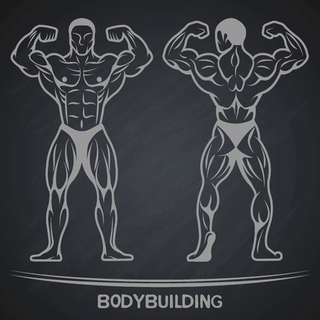

Qu'est-ce que le culturisme ?
 Selon le Larousse, c'est une culture physique destinée à développer la musculature.
Selon le Larousse, c'est une culture physique destinée à développer la musculature.
En d'autres termes, on peut le qualifier d'art du muscle, on
cherche à surdéveloper sa masse musculaire à l'aide de la musculation
(on parle d'hypertrophie musculaire), pour atteindre un physique dit
aesthétic(musclé).
Tout réside donc dans l'apparence esthétique du corps humain.
Ce sport est plus connu sous le nom de Bodybuilding en
anglais.
Quelle est l'origine de cette discipline ?
 L'entraînement avec des poids était pratiqué il y a déjà 4000 ans par les
Babyloniens, Assyriens et Chinois. De même pour les Grecs et Romains un peu plus tard.
L'entraînement avec des poids était pratiqué il y a déjà 4000 ans par les
Babyloniens, Assyriens et Chinois. De même pour les Grecs et Romains un peu plus tard.
Toutefois, il faudra atteindre jusqu'en 1811 avant la création du premier club de
musculation, appelé "poids et haltères" sous Napoléon.
Le but était de fortifier les soldats les plus faibles à l'aide de poids et de
lests.
L'apparition du culturisme en tant que tel se déroule au XIX° siècle en Europe. Un
de ces fondateurs fut l'athlète allemand
Eugène
SANDOW né en 1867.
Il se fit connaître pour ses démonstrations de son physique impressionnant, aspect clé de ce sport.
Au delà de cela, il chercha réellement l'esthétisme musculaire et non un physique démesuré.
En quoi consiste-t-il précisément ?
Les culturistes cherchent à développer un physique à la fois massif(large),musclé et
sec(muscles apparents).
Cela demande un travail très rigoureux et fastidieux.
Il se décompose pour simplifier, en une alternance d'entraînements de musculation hypertrophique et de
repos,
le tout accompagné d'une alimentation strict.
Cette alimentation varie en fonction du Cycle dans lequel ils sont, il en existe
trois :

- Prise de masse(Bulking en anglais): Régime
riche en calories et en protéine, où on ingère plus de calories qu'on en brûle.
Objectif: favoriser la croissance musculaire en prenant du poids
- Sèche(Cutting): Diète où l'on cherche à
avoir un déficit calorique, perdre plus de calories qu'on ingère qui amène à une perte de poids.
Objectif: diminuer le pourcentage de masse de grasse, en maintenant autant
que possible sa masse musculaire.
- Maintien(Maintenance): Alimentation, dans
laquelle on brûle autant de calories qu'on absorbe, le poids reste alors stable.
Objectif: garder une musculature stable et constante durant tout le
régime.
A quoi doit ressembler exactement un physique de culturiste ?Que
vise-t-il ?
Beaucoup d'éléments se conjuguent, pour construire le corps tant demandé de culturiste(ou bodybuiler).
Les atteintes se divisent et sont différentes en fonction des muscles ciblés.
On compte 8 groupes musculaires particulièrement importants à développer, voici la
liste en partant des jambes:
- Les Jambes: les quadriceps et ischiojambiers sont les deux muscles
principaux de ce groupe,
qui permettent d'avoir des jambes particulièrement musclées visuellement.(striations visible)
- Les Fessiers: composé majoritairement du grand fessier,le muscle qui
donne les fameuses stridations visibles,
et également le bombé de la fesse dans son ensemble.
- Les Dorsaux(le dos): le muscle que l'on voit en premier est le grand
dorsal, qui donne une forme en "V" au culturiste,il élargit donc le dos,
et donne du volume au buste dans son ensemble.

- La Chaîne Abdominal: divisé en deux parties, le grand droit qui
représente les abdominaux("tablette de chocolat"), un aspect crucial de la discipline.
Et les obliques qui forment toute la partie dentelé des abdos qui s'insèrent sur les côtés.
- Les Bras: groupes musculaires le plus recherchés en termes
d'hypertrophie.Il est composé de triceps, qui est la plus imposante car elle recouvre 2/3 du bras.
D'autre part il y a le biceps, icone de ce sport parmi la population, il forme en se contractant une
"bosse" apparente et donne du volume sur la partie avant du bras.
- Les Pectoraux: considérés comme les muscles les plus voyants de tous
le haut du corps(pour un homme) et comme celui qui donne de l'ampleur au buste.
Les culturistes cherchent à augmenter leur volumes et largeurs le plus possible, car ils sont
décisifs dans l'apparence de leur physiques.
- Les Epaules: permettent de compléter l'effet donné par les dorsaux de
cette forme en "V" du corps, grâce à leur largeur.
De plus, les fibres musculaires ici sont particulièrement visibles lors de leurs contractions.
- Les Trapèzes: point caractéristique des culturistes qui ont des
trapèzes particulièrement plus développés que la moyenne.
Ce sont tous les muscles situés au niveau du haut du dos, qui donne un aspect de "taureaux" aux
athlètes.
Quelles sont les poses propres aux compétitions de culturisme ?
En effet ce sport comme bien d'autres, possèdent de nombreuses compétitions, de
différentes catégories et niveaux.
Elles ont tous pour but à juger une chorégraphie des athlètes accompagnée d'une
musique et de plusieurs poses caractéristiques:
- Double biceps de face( Front double
biceps): on ressort le torse, on contracte les cuisses, on ouvre la cage
thoracique, on lève les deux bras en les plaçant parallèlement au sol.
Puis, on contracte les deux biceps,tout en faisant ressortir les dorsaux(le dos) et les abdos.(Démonstration Double biceps
de face)
- Double biceps de dos(Back double
biceps): on ouvre les épaules, on place les coudes à leurs hauteurs, puis on
contracte le dos et les biceps.
En même temps,les ischios et mollets seront sollicités, car on soulève légèrement une des deux
jambes.(Démonstration Double
biceps)
- Biceps cage(Side chest): on redresse la
poitrine, on oriente le buste sur le côté, on tire le coude vers l'arrière, on plie une jambe pour
faire ressortir les ischios et mollets.
Et, on contracte à la fois les pectoraux et le biceps du bras mis en évidence devant le jury.(Démonstration Biceps
Cage)

- Triceps cage(Side triceps): on plie
légèrement les cuisses, on pivote le haut du corps, on vient coller le bras sur les dorsaux.
Ensuite, on contracte le triceps en même temps que les abdos.(Démonstration Triceps
Cage)
- Abdos cuisses(Abdominal and thighs): on
place les mains derrière la nuque, on sort la poitrine et on contracte toute la chaîne
abdominal.
On va également, faire ressortir les quadriceps en plaçant la pointe des pieds vers le bas.(Démonstration Abdos
Cuisses)